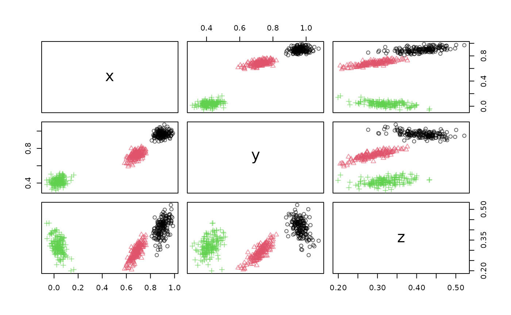

Creates a socket server connection to send stream data.
Arguments
- dsd
A DSD object.
- port
port used to serve the DSD.
- blocksize
number of data points pushed on the buffer at once.
- background
logical; start a background process?
- ...
further arguments are passed on to
socketConnection().
Value
a processx::process object created with callr::r_bg() which runs the plumber server
in the background. The process can be stopped with rp$kill() or by killing the process
using the operating system with the appropriate PID. rp$get_result() can
be used to check for errors in the server process (e.g., when it terminates
unexpectedly).
Details
Creates a server socket with socketConnection()
and then uses a stream::write_stream() to write data to a socket connection.
This method does not provide a header for the data.
See also
Other Socket:
DSD_ReadSocket()
Other dsd:
DSD_ReadSocket(),
DSD_ReadWebService(),
publish_DSD_via_WebService()
Examples
# find a free port
port <- httpuv::randomPort()
port
#> [1] 29544
# create a background DSD process sending data to the port
rp1 <- DSD_Gaussians(k = 3, d = 3) %>% publish_DSD_via_Socket(port = port)
rp1
#> PROCESS 'R', running, pid 8147.
# connect to the port (retry waits for the socket to establish)
con <- retry(socketConnection(port = port, open = 'r'))
dsd <- retry(DSD_ReadStream(con, col.names = c("x", "y", "z", ".class")))
get_points(dsd, n = 10)
#> x y z .class
#> 1 0.62789107 0.7222889 0.2728554 2
#> 2 0.65209004 0.6903966 0.2744383 2
#> 3 0.74013231 0.7397348 0.3153817 2
#> 4 0.72744777 0.7427283 0.3470746 2
#> 5 0.69315059 0.7132719 0.2896850 2
#> 6 0.87847411 0.9638830 0.3662969 1
#> 7 0.92239483 0.9628923 0.4602023 1
#> 8 0.71483815 0.6940349 0.2967005 2
#> 9 0.05340394 0.4848126 0.3929023 3
#> 10 0.07408589 0.3942486 0.3139123 3
plot(dsd)

# close connection
close_stream(dsd)
# end the DSD process. Note: that closing the connection above
# may already kill the process.
rp1$kill()
#> [1] TRUE
rp1
#> PROCESS 'R', finished.